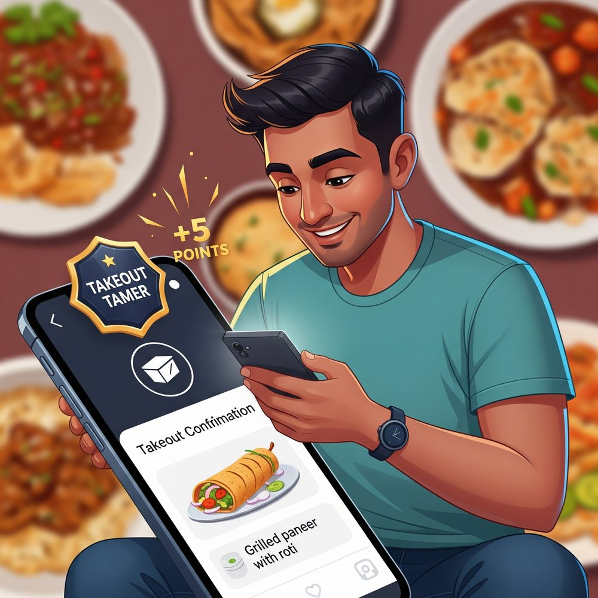
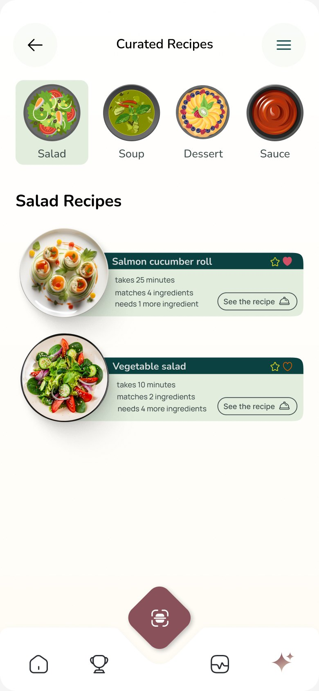
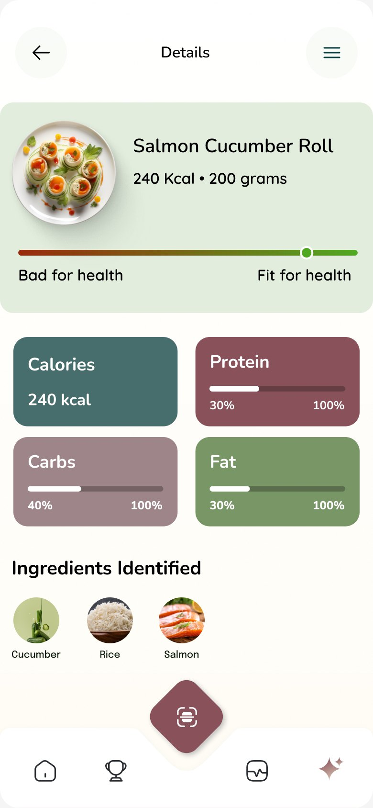
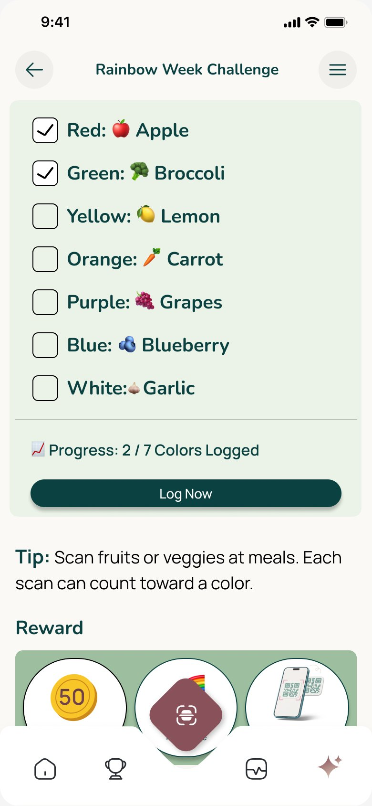
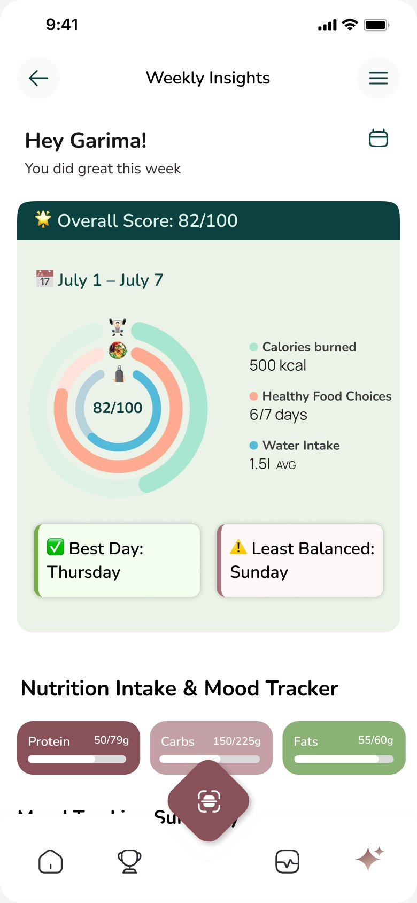
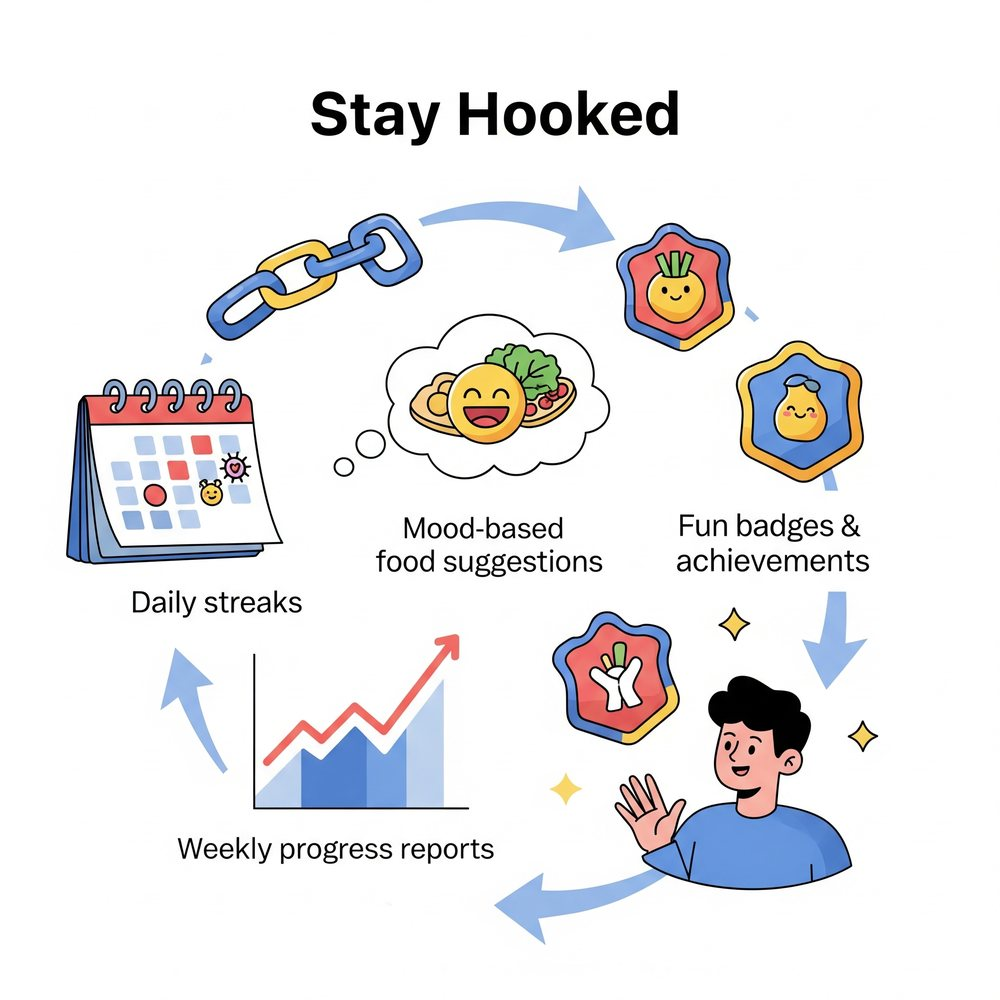
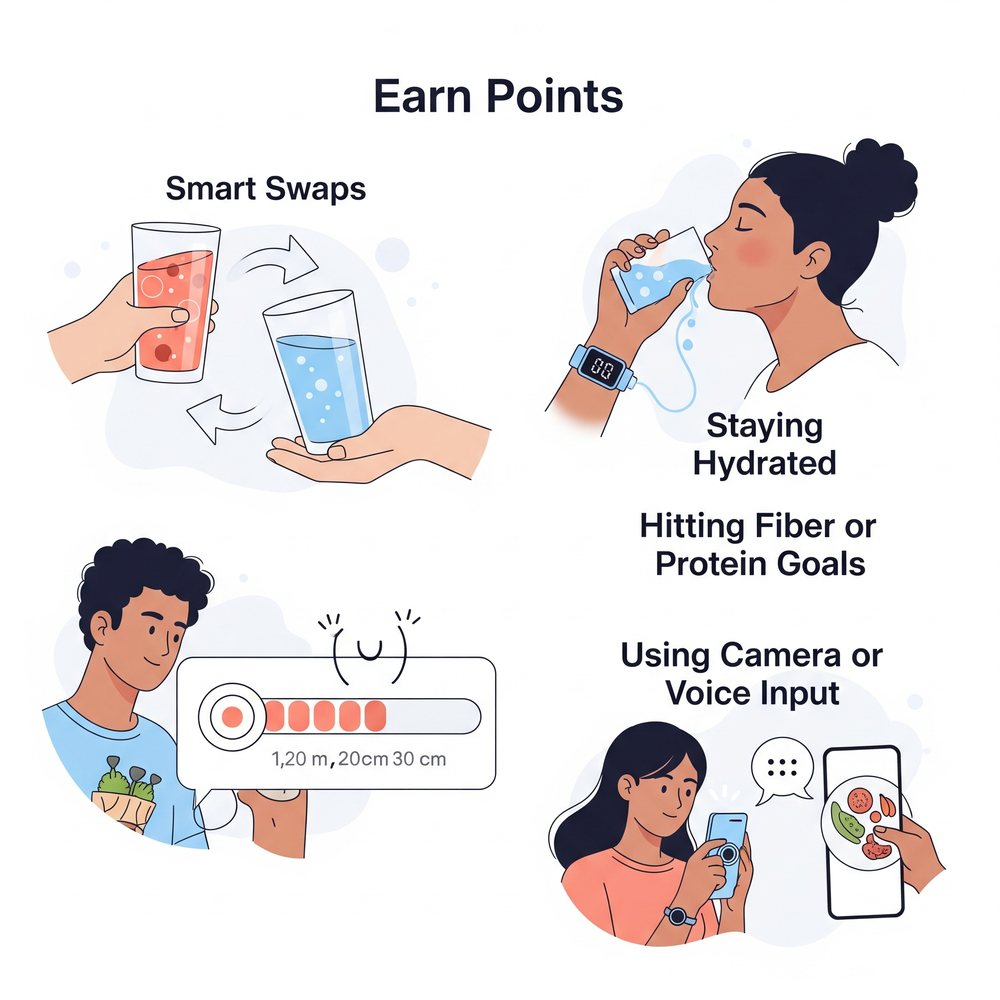

Our user quit three apps because logging was a chore.
Health & nutrition · Mobile AI · Concept
NutraScan.
An AI food buddy that reads your mood, scans your fridge and turns what you have into a better meal.
- Role
- Product designer, end to end
- Team
- Team Sixth Sense
- Platform
- Android & iOS
- Scope
- Brand · UX · UI

01 · Problem
Health apps feel like homework.
Calorie-first apps overwhelm casual users.
Home-cooked and regional food is barely covered.
02 · How I found it
I started with why people quit.
- CompareCompetitor SWOT
HealthifyMe and Lifesum: what works, what overwhelms.
- MeetA persona: Garima, 29
Rushed, eats out often, wants to eat better, hates logging.
- StoryA storyboard before screens
Three moments in a day where one nudge changes a choice.
- BuildPrototype
Voice, scan and mood flows in Figma.
03 · Research evidence
What we found, and what it changed.
- MethodCompetitor SWOTHealthifyMe, LifesumWhat we heard
Leaders overwhelm casual users with numbers, and miss Indian, home-cooked food.
What changedMood first, numbers later; recipes from local food.
- MethodPersona researchGarima · add how many people you spoke toWhat we heard
“Deleted 3 food apps last month.” Logging every meal was the reason.
What changedNo typing at all: voice and camera replace logging.
- MethodPersona researchGarima at the grocery storeWhat we heard
Overwhelmed by labels in the aisle.
What changedBarcode scan with a better alternative.
- MethodUsability testsAdd if you tested, and with whomWhat we heard
Add what people struggled with.
What changedAdd what you changed.
04 · Approach
Mood before metrics.
What to keep and drop from the market leaders.
Voice and camera replace manual logging.
Open on the vibe of the day, not a calorie count.
Points, challenges and badges for small wins.
05 · Storyboard
One day, three small nudges.
Before a single screen, we told the idea as a story.



06 · Key screens
Scan, see, cook, repeat.






07 · Habit loop
Healthy choices, without missing out.



08 · Brand
A buddy, not a calculator.
- N + S blend. The mark joins the letters of NutraScan.
- AI diamond. The spark at the centre is the AI, always noticing.
- Wave cut. Consistency over perfection.
Nunito for headings, Manrope for body. Tagline: “Your pocket food buddy.”
09 · Reflection
What I’d do again, and not.
What didn’t work
- It is a concept: the fridge scan and mood check were never tested in real kitchens. Confirm.
- Points and badges risk the same guilt loop we set out to avoid, if streaks break.
- Add one thing that did not work.
What I’d do differently
- Test the storyboard with five people before designing screens.
- Prototype the fridge scan with real fridges early: it is the riskiest promise.
- Add your own.